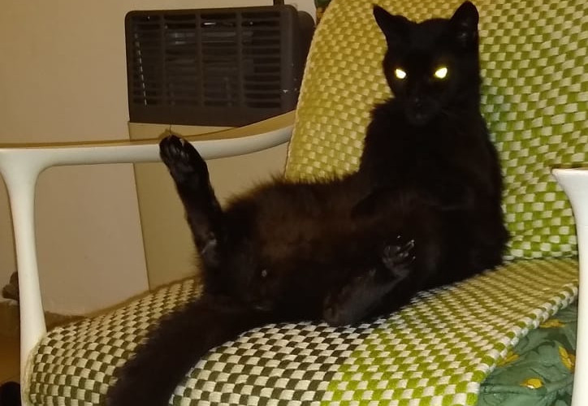

Pequeños proyectos y cosas buenas de la vida.
-
Video demostrativo de Web Scraping de hace unos años.
Este video lo tuve que realizar para la aprobación de una materia de la UNTREF.
Era un trabajo en grupo de 4 a 5 integrantes. Mi se llamaba Rosita's soldiers en honor a una gran profesora llamada Rosita Wachenchauzer (Que se había jubilado el año anterior) pero finalmente se disolvió porque 3 abandonaron.
Luego pasó a llamarse uno solo porque lo terminé haciendo solo, estuvo bueno pero sufrí bastante porque creí que no llegaba al día de la entrega.Video demostrativo
El código se puede descargar desde mi git, seguro habrá que arreglar muchas cosas.
-
Simulador De Arena
Programar es una de las actividades que más me gusta hacer, por eso a veces programo por diversión. En esta ocasión se me ocurrió que quería hacer un simulador de arena. Aquí va el video que me inspiró a relizar mi propia implementacion en Processing.
Aqui va el video
El código se puede descargar desde mi git haciendo click aqui.
-
Nini Marshall una joya argentina
Nini fue una humorista argentina. Trabajó en radio, cine y television. Sobre todo radio y cine. Es un ícono del cine argentino y una comediante que tiene vigencia hasta la actulidad. Personalmente la descubrí hace unos pocos años, me encanta escuchar sus personificaciones de radio (Están displonibles en youtube) mientras lavo los platos luego de cenar.
"La desaparición del Mingo" es mi sketch favorito.¡Gracias Nini!
-
Mi gato Martín
Este es mi gato negro de la suerte. En su casa solo se hace lo que él quiere, sus deseos son ordenes. Me gusta porque si se te acerca es porque le caíste bien, sino ni se gasta en mirarte.
Si dios existe, seguro que se parece mucho a un gato.¡Gracias Martin por todos los arañazos que me diste, cada día te salen mejor!